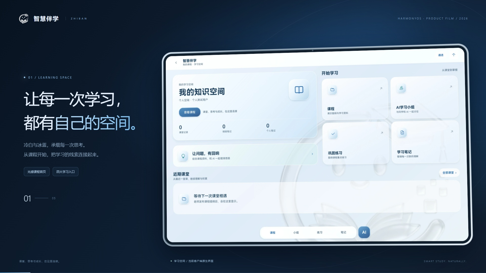

NATIVE TO HARMONYOS 智慧伴学
让每一堂课，都有回响。
留住课堂的重点，接住思考的灵光。
从一个疑问，到真正理解，智伴陪你走得更远。
DESIGNED FOR
YOUR NEXT AHA.
冷白 · 冰蓝
专注，自然发生。
当前客户端 · 本次重新采集 2026.09.26
HarmonyOS 原生应用手机 / 平板 / 2in1围绕课程的 AI 协同学习
以课堂为起点01 留住课堂重点
02 让疑问有回应
03 在交流中理解
04 把知识变成自己的
CONNECTED LEARNING
学习的每一步，
都不必从零开始。
课堂内容不再散落各处。
围绕同一门课程，把资料、思考与练习连接起来。
▤
从课堂，到知识认真听课，
重点交给智伴。
教师录音转写，生成并审核课程提纲。学生沿课次时间线，回看转写、提纲与教师资料。
12:08今天，我们一起理解二叉树的三种遍历。
12:16中序遍历的核心顺序是 左 · 根 · 右。
✦ 结构化提纲 教师审核 → 发布
✦
从提问，到理解懂你正在学什么的 AI。
基于课程知识库检索，让提问与课堂内容相连；支持 PDF、PPTX 和文本资料导入。
▧ 教师课件▤ 课堂提纲↗ 课程问答
✎
从记录，到掌握用自己的方式，记住它。
Markdown 与手写笔记并行，个人整理或班级共享。再用知识点练习，检验是否真正理解。
A LITTLE TOUR, A BIG PICTURE
一堂数据结构课，
五种「原来如此」。
点一点，亲自走过一次学习闭环。
交互流程示意 · 预设示例内容，无需登录 演示仅在当前网页运行，不会写入应用数据
THE PRODUCT, IN MOTION
看见界面，
更看见学习如何发生。
全新采集 · 2026.09.2632 秒，走进当下的智伴。
当前客户端画面，配以镜头推进与细节特写。
◈ ZHIBAN / PRODUCT FILM1080P / 60 FPS · 00:32 · 无声短片
视频暂时无法播放，可查看下方 GIF 或下载 MP4。
● 本次从 HarmonyOS 模拟器重新采集；保留客户端原始界面。短片为界面镜头编排，练习包含实际选答与判题画面。
也可以直接观看 GIF 动图 ＋

32 秒循环 · GIF
EVERY DETAIL, RECAPTURED
每一个细节，
都是现在的智伴。
本次新采集的原生页面，可点击放大。
光感材质、清晰层级，让内容站在画面中央。
采集使用现有个人测试空间；课程 AI 与小组展示入口及角色介绍，练习使用客户端内置示例题。网页交互区仍为预设流程演示。
THINK BETTER, TOGETHER一个疑问，
不止一种思路。
真人同学与四位 AI 学伴围绕课程展开讨论。有人引导，有人追问，有人换个角度解释，有人帮你查漏补缺。
认识你的 AI 学习小组 ↗支持单 AI 伴学 / 多 AI 讨论 · 学习总结可导出 Markdown A✦
组员 A引导思路
把问题拆开，
让讨论有方向。
B?
组员 B思辨追问
多问一句为什么，
让理解更深入。
C↗
组员 C一起探索
用学习者的视角，
把抽象变具体。
D✓
组员 D查漏补缺
关注遗漏与易错点，
帮讨论收拢重点。
NATIVE TO HARMONYOS换个设备，
思路不用重来。
为手机、平板和 2in1 设计。
让课堂中的记录，接着成为自习时的思考。
NFC 标签接续系统隔空传送跨端状态接续
隔空传送需支持该能力的 API 20+ 华为真机；相关硬件能力仍需真机验证。 ◈ 智伴 / 我的笔记•••
第 05 讲把二叉树，画进脑海里。
A
╱ ╲
B C
中序遍历 → 左 · 根 · 右
GOOD TO KNOW
关于智伴，
你可能还想知道。
老师和学生分别可以做什么？+
教师管理课程与排课，完成课堂录音、转写和提纲审核发布，维护课程资料。学生加入课程后，查看课表和课次内容，使用 AI 问答、学习小组、个人 / 班级笔记和练习。
这里的演示可以直接连接我的课程吗？+
此页面是独立的产品演示站，交互使用预设示例，不连接账号、麦克风或真实课程。实际使用需安装 HarmonyOS 客户端，并连接已配置的服务端。
网络版与比赛演示版有什么区别？+
网络版由 HarmonyOS 客户端与 FastAPI 服务端协同，提供账号、课程和 AI 服务。比赛版将本地后端集成到单个 HAP，AI、语音转写和知识检索采用离线演示逻辑，适合演示流程。
哪些能力需要额外配置或验证？+
真实 AI 回答、知识向量检索、邮件验证码和华为云语音识别需配置对应服务。实时云端转写效果、M-Pencil 压感与系统隔空传送需继续进行真实服务或真机验收。
✦
EVERY CLASS, A LITTLE CLOSER把「听过了」，
变成「我懂了」。
智慧伴学，陪你走过从课堂到掌握的每一步。
开启一段学习之旅 ↗